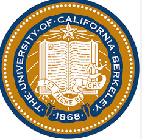

Yen-Jung Liu
Email
Yenjungliu101090@gmail.com
Permanent Address
15F. No.135, Sec. 2, Fuxing Rd.,
Xinzhuang Dist., New Taipei City 24254
Taiwan (R.O.C.)
Tel: (886) 2 2993 0089
Mobile: (886) 978 738 859

Education
Sep 2012 – May 2014
University of California, BerkeleY-CA, USA
Bachelor of Arts in Economics
Sep 2009 – June 2012
Edmonds Community College-WA,USA
-High School completion
-Associate of Art, Economics (Honors Candidate)
May 2008- May 2009
Hamilton High School-MS,USA
EF-High School Exchange Student Program
Working Experience
Nov 2014 – Present
Ernst Young Global Limited-Taipei, Taiwan
Tax-Transfer Pricing Staff
- Assist clients in the preparation of transfer pricing document and potential audit defense.
- Conduct economic analysis on related party transaction.
- Conduct industry analysis in various industries.
- Assist in potential tax planning opportunities with clients.
- Off-site client interview for fact gathering purpose.
- Conduct economic analysis on related party transaction.
- Conduct industry analysis in various industries.
- Assist in potential tax planning opportunities with clients.
- Off-site client interview for fact gathering purpose.
Awards, Extra-curricular Activities
Sep 2011 – May 2012
Global Volunteer Club-WA, USA
Accountant/ Organizer
- Provide volunteer opportunity to club members
- Host weekly meeting and events
- Contact local organization for volunteer opportunity
March 2009
2009 Monroe County Academic Award-MS, USA
- First place in math competition
- 12,000 USD scholarship from Mississippi Woman University
- Provide volunteer opportunity to club members
- Host weekly meeting and events
- Contact local organization for volunteer opportunity
March 2009
2009 Monroe County Academic Award-MS, USA
- First place in math competition
- 12,000 USD scholarship from Mississippi Woman University